Infrastructure
Projects designed to support growth, connect communities and strengthen productive capacity.
Groupe Babia Guinée SARLU
Building Guinea's future today through strategic sectors, infrastructure, food security and job creation across Guinea and Africa.
National impact
Projects designed to support growth, connect communities and strengthen productive capacity.
A commitment to local production, processing and reliable food access for Guinea and the region.
Every project is designed to create employment, transfer skills and strengthen Guinean talent.
Strong local roots combined with international standards of quality, governance and execution.
Quick orientation
About us
Groupe Babia Guinée SARLU is a leading diversified Guinean company headquartered in Kaloum, Conakry. We are committed to accelerating Guinea's economic transformation through strategic investments in key growth sectors.
With a strong local presence and an international outlook, we combine Guinean expertise with global standards of quality, governance and execution. Our integrated business model allows us to create value across the entire supply chain, from farm to market, from concept to construction, from resource to export.
Our sectors
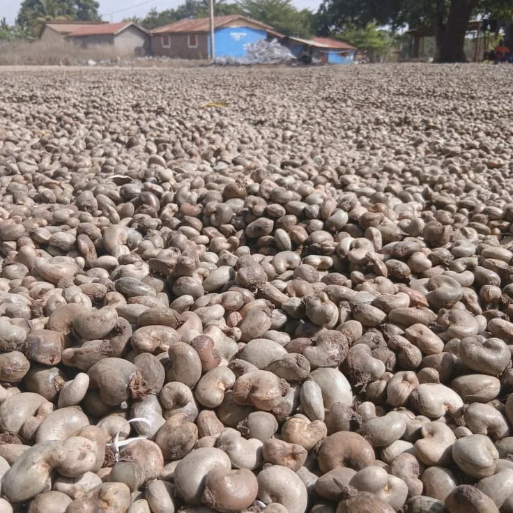
Agricultural products for export and food commodities for import, with close attention to quality, packaging and traceability.
Explore the agri-food areaBuildings, infrastructure and public works adapted to regional needs, with a requirement for durability and compliance.
View construction services
Support for mining operations, logistics and supply, driven by reliability, safety and local value creation.
Understand the mining area
Supply, value chain organisation and marketing of fishing products, handled responsibly.
Discover the fishing activity
Processing, packaging and upgrading of agricultural raw materials to develop higher value-added products.
Explore agro-industry
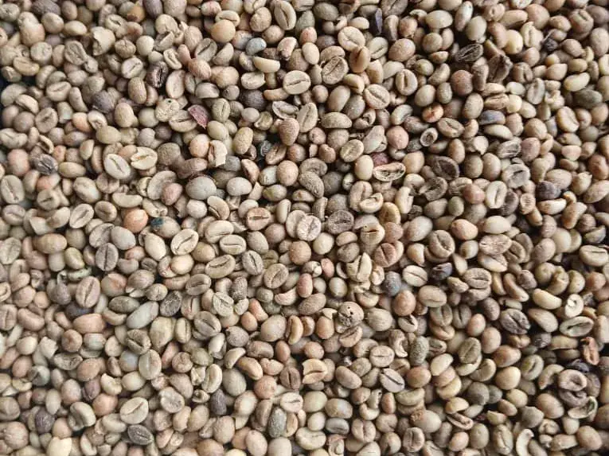
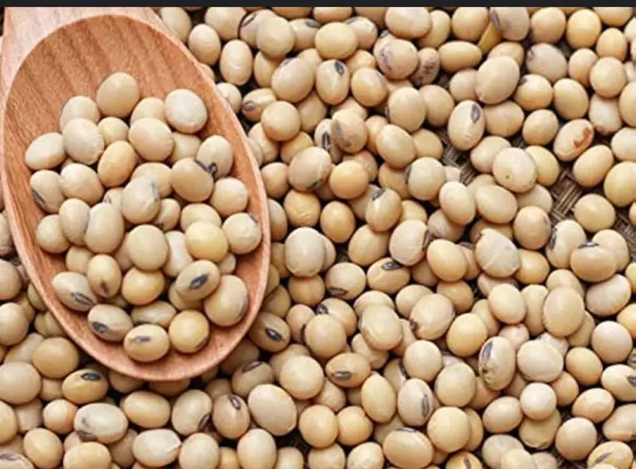
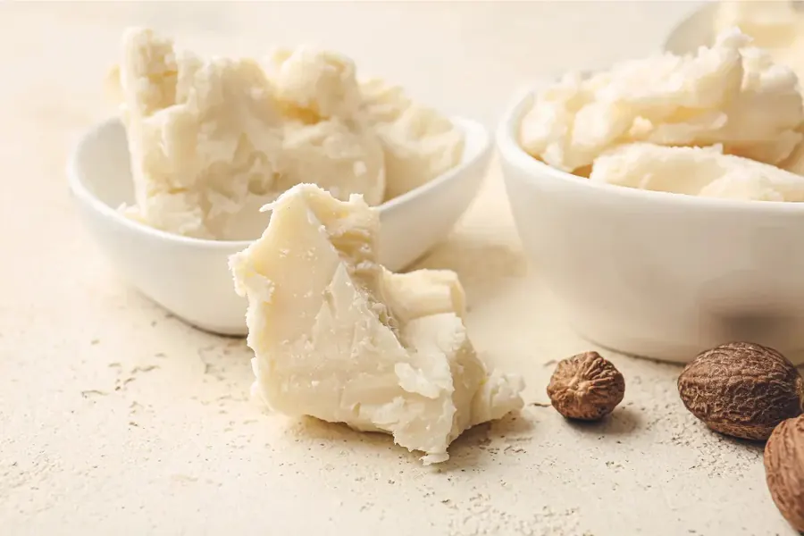
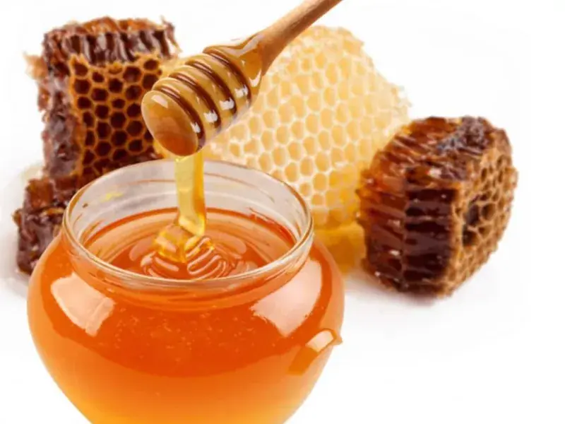
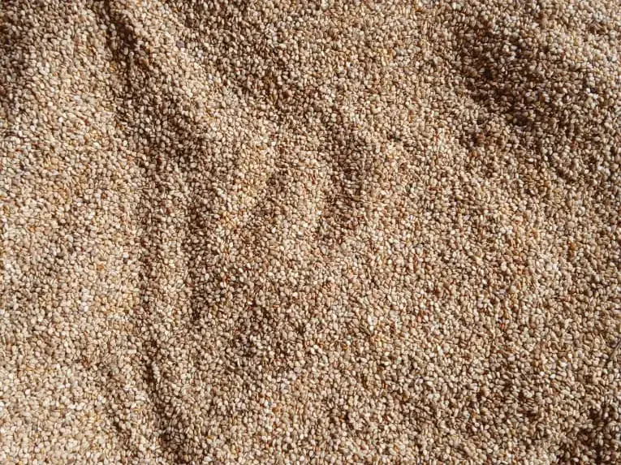
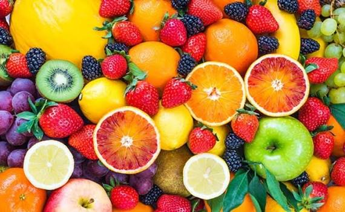
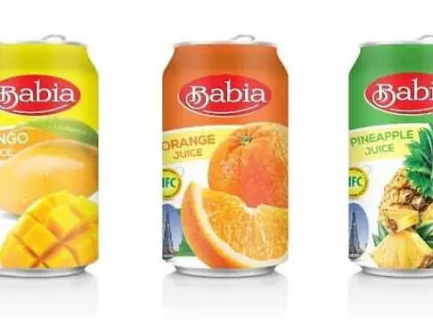
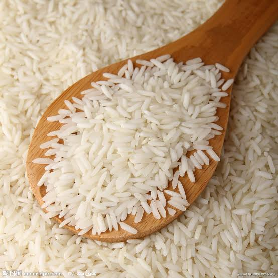
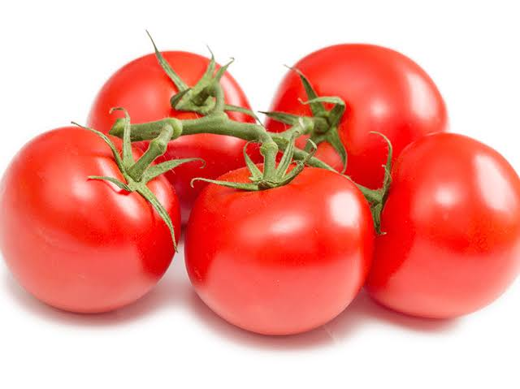
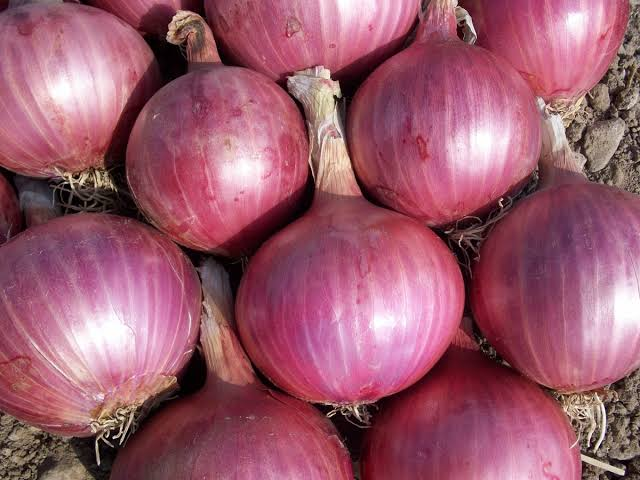
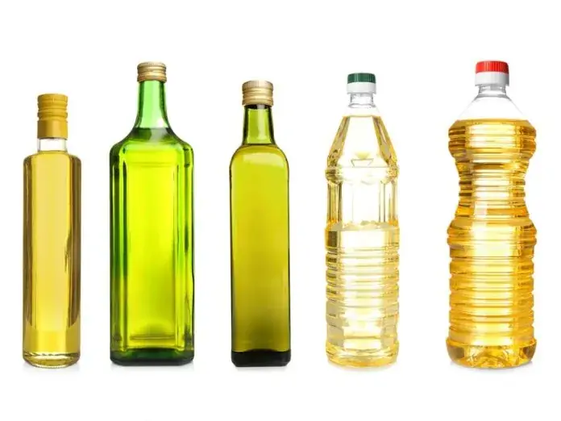
Agri-food catalog
Our agri-food offer answers the needs of buyers, importers and distributors with the essential information on availability, packaging, quality and volumes.
Our vision & values
Our vision is to be West Africa's leading diversified group driving industrialization, food security and sustainable prosperity.
"We are not just building a company. We are building a nation."Alhassane Doukoure, Founder & CEO
No one goes hungry, jobs are created at home, resources create wealth locally, and growth remains sustainable for communities and the environment.
We do this through integrated agriculture, industry and trade, from seed to shelf and from mine to market.
Transparent, ethical and compliant business. No shortcuts. Trust is our currency with partners, government and communities.
We build to global standards, with quality products, on-time delivery and continuous improvement.
We process, package and add value in Guinea instead of only trading raw materials.
Renewable energy, zero-waste thinking, farmer support and profit with purpose.
Our employees and partner farmers are our greatest asset. We invest in training, safety and fair wages.
We are 100% Guinean. "Produit de Guinée" is our pride and our commitment.
Reduce imports, create direct jobs and build infrastructure in Guinea and beyond.
Premium quality BABIA RICE and services: traceable, safe and affordable food.
A reliable partner for investors, banks and government, delivering what we promise.
Biomass power, solar, water recycling and continuous carbon footprint reduction.
Highlights
Agricultural products, food commodities, packaging and quotation requests.
View the catalogBuildings, public works and project coordination serving regional development.
View the construction area
Logistics, supply and cooperation with constant attention to compliance.
View the mining areaFirst contact
Share your need, your volumes, your timeline or the location of your project. Our team will direct you to the right business area.